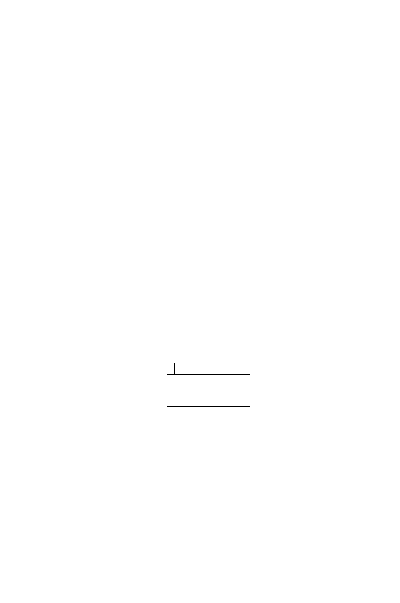

64
2 Words
repeatedly simulate strings of 1000 letters having distribution
p
, calculate
O
(the number of times the pair of letters
r
1
r
2
is observed) and
E
, and hence
X
2
/c
. Plot a histogram of these values, and compare it to the theoretical dis-
tribution (which is the
χ
2
distribution with 1 degree of freedom). Remark:
This simulation approach provides a useful way to estimate percentage points
of the distribution of
any
test statistic.
Exercise 11.
The genome composition
π
of
E. coli
can be computed from Ta-
ble 2.1. Take the first 1000 bps of the
E. coli
sequence you used in the previous
exercise. We are going to use a variant of (2.22) to test if this 1000 bp sequence
has an unusual base composition when compared with
π
. The statistic to use
is
X
2
=
4
i
=1
(
O
i
−
E
i
)
2
E
i
,
(2.29)
where
O
i
denotes the number of times base
i
is observed in the sequence, and
E
i
denotes the expected number (assuming that frequencies are given by
π
).
(a) Calculate
O
i
and
E
i
, i
= 1
, . . . ,
4, and then
X
2
.
(b) Values of
X
2
that correspond to unusual base frequencies are determined
by the large values of the
χ
2
distribution with 4
−
1 = 3 degrees of freedom.
Using a 5% level of significance, are data consistent with
π
or not? [Hint:
percentage points of the
χ
2
distribution can be found using
R
.]
Exercise 12.
In this exercise we have two random variables
X
and
Y
which
are not independent. Their joint probability distribution is given in the fol-
lowing table:
Y
1
3
6
9
2 0.11 0.05 0.20 0.08
X
3 0.20 0.02 0.00 0.10
7 0.00 0.05 0.10 0.09
The values of
X
are written in the first column and the values of
Y
in the
first row. The table is read as
P
(
X
= 7 &
Y
= 6) = 0
.
10, and so on.
(a) Find the marginal distribution of
X
and
Y
. (That is,
P
(
X
= 2)
,
P
(
X
=
3)
, . . . .
)
(b) Write
Z
=
XY
. Find the probability distribution of
Z
.
(c) The
covariance
between any two random variables is defined by
Cov(
X, Y
) =
E
(
X
−
E
X
)(
Y
−
E
Y
)
.
Show that Cov(
X, Y
) =
E
(
XY
)
−
E
X
×
E
Y.
(d) Find
E
X,
E
Y, σ
2
X
= Var
X, σ
2
Y
= Var
Y,
and Cov(
X, Y
) for the example in
the table.